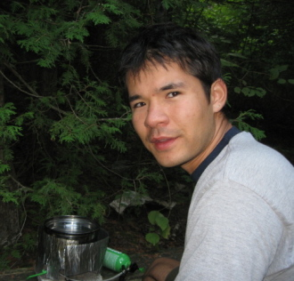

Welcome to my site
My name is Kiyoshi Masui (shortened to Kiyo) and I am a post-doc in the Departement of Physics and Astronomy at the University of British Columbia. I did my PhD at the Canadian Institute for Theoretical Astrophysics (CITA) and the University of Toronto Department of Physics. My PhD adviser was Prof. Ue-Li Pen and my research interests lie in theoretical cosmology. Cosmology (a division of astrophysics), is the study of the evolution of the Universe on the largest scales. More specifically I work on the use of the 21 cm neutral hydrogen line which combines aspects of radio astronomy, map making, foreground subtraction and statistics. Feel free to take a look around or contact me with any questions you might have.
 Photo credit: Spencer Fu